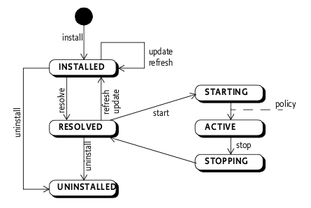
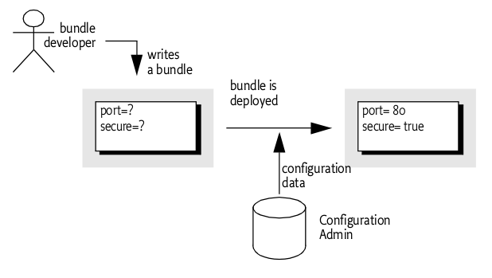

Import-Package: com.acme.foo;version="[1.23, 2)", com.acme.bar;version="[4.0, 5.0)"
What is OSGi
The OSGi specifications define a standardized, component-oriented, computing environment for networked services that is the foundation of an enhanced service-oriented architecture.
Developing on the OSGi platform means first creating your OSGi bundles, then deploying them in an OSGi Framework.
What does OSGi offer to Java developers?
OSGi modules provide classloader semantics to partially expose code that can then be consumed by other modules. The implementation details of a module, although scoped public by the Java programming language, remain private to the module. On top of that you can install multiple versions of the same code and resolve dependencies by version and other criteria. OSGi also offers advanced lifecycle and services layers, which are explained in more detail further down.
What kind of applications benefit from OSGi?
Any application that is designed in a modular fashion where it is necessary to start, stop, update individual modules with minimal impact on other modules. Modules can define their own transitive dependencies without the need to resolve these dependencies at the container level.
OSGi Framework Overview
The functionality of the Framework is divided in the following layers:
-
Security Layer (optional)
-
Module Layer
-
Life Cycle Layer
-
Service Layer
-
Actual Services

Source: OSGi Alliance
OSGi Security Layer
The OSGi Security Layer is an optional layer that underlies the OSGi Service Platform. The layer is based on the Java 2 security architecture. It provides the infrastructure to deploy and manage applications that must run in fine grained controlled environments.
The OSGi Service Platform can authenticate code in the following ways:
-
By location
-
By signer
For example, an Operator can grant the ACME company the right to use networking on their devices. The ACME company can then use networking in every bundle they digitally sign and deploy on the Operator’s device. Also, a specific bundle can be granted permission to only manage the life cycle of bundles that are signed by the ACME company.

Source: OSGi Alliance
The current version of JBoss OSGi does not provide this optional layer. If you would like to see this implemented, let us know on the forums: http://community.jboss.org/en/jbossosgi.
OSGi Module Layer
The OSGi Module Layer provides a generic and standardized solution for Java modularization. The Framework defines a unit of modularization, called a bundle. A bundle is comprised of Java classes and other resources, which together can provide functions to end users. Bundles can share Java packages among an exporter bundle and an importer bundle in a well-defined way.
Once a Bundle is started, its functionality is provided and services are exposed to other bundles installed in the OSGi Service Platform. A bundle carries descriptive information about itself in the manifest file that is contained in its JAR file. Here are a few important Manifest Headers defined by the OSGi Framework:
-
Bundle-Activator - class used to start, stop the bundle
-
Bundle-SymbolicName - identifies the bundle
-
Bundle-Version - specifies the version of the bundle
-
Export-Package - declaration of exported packages
-
Import-Package - declaration of imported packages
The notion of OSGi Version Range describes a range of versions using a mathematical interval notation. For example
With the OSGi Class Loading Architecture many bundles can share a single virtual machine (VM). Within this VM, bundles can hide packages and classes from other bundles, as well as share packages with other bundles.

Source: OSGi Alliance
For example, the following import and export definition resolve correctly because the version range in the import definition matches the version in the export definition:
A: Import-Package: p; version="[1,2)"
B: Export-Package: p; version=1.5.1

Source: OSGi Alliance
Apart from bundle versions, OSGi Attribute Matching is a generic mechanism to allow the importer and exporter to influence the matching process in a declarative way. For example, the following statements will match.
A: Import-Package: com.acme.foo;company=ACME
B: Export-Package: com.acme.foo;company=ACME; security=false
An exporter can limit the visibility of the classes in a package with the include and exclude directives on the export definition.
Export-Package: com.acme.foo; include:="Qux*,BarImpl"; exclude:=QuxImpl
OSGi Life Cycle Layer
The Life Cycle Layer provides an API to control the security and life cycle operations of bundles.
A bundle can be in one of the following states:

Source: OSGi Alliance
A bundle is activated by calling its Bundle Activator object, if one exists. The BundleActivator interface defines methods that the Framework invokes when it starts and stops the bundle.
A Bundle Context object represents the execution context of a single bundle within the OSGi Service Platform, and acts as a proxy to the underlying Framework. A Bundle Context object is created by the Framework when a bundle is started. The bundle can use this private BundleContext object for the following purposes:
-
Installing new bundles into the OSGi environment
-
Interrogating other bundles installed in the OSGi environment
-
Obtaining a persistent storage area
-
Retrieving service objects of registered services
-
Registering services in the Framework service
-
Subscribing or unsubscribing to Framework events
OSGi Service Layer
The OSGi Service Layer defines a dynamic collaborative model that is highly integrated with the Life Cycle Layer. The service model is a publish, find and bind model. A service is a normal Java object that is registered under one or more Java interfaces with the service registry. OSGi services are dynamic, they can come and go at any time. OSGi service consumers, when written correctly, can deal with this dynamicity. This means that OSGi services provide the capability to create a highly adaptive application which, when written using services, can even be updated at runtime without taking the service consumers down.
The OSGi Declarative Services and OSGi Blueprint specifications significantly simplify the use of OSGi Services which means that a consumer gets the benefits of a dynamic services model for very little effort.

OSGi Services
OSGi Service Compendium
The OSGi Service Compendium is described in the OSGi Compendium and Enterprise specifications. It specifies a number of services that may be available in an OSGi runtime environment. Although the OSGi Core Framework specification is useful in itself already, it only defines the OSGi core infrastructure. The services defined in the compendium specification define the scope and functionality of some common services that bundle developers might want to use. Here is a quick summary of the popular ones:
Log Service
Chapter 101 in the Compendium and Enterprise specifications.
The Log Service provides a general purpose message logger for the OSGi Service Platform. It consists of two services, one for logging information and another for retrieving current or previously recorded log information.
The JBoss OSGi Framework provides an implementation of the Log Service which channels logging information through to the currently configured system logger.
Http Service
Chapter 102 in the Compendium and Enterprise specifications.
The Http Service supports a standard mechanism for registering servlets and resources from inside an OSGi Framework. This can be used to develop communication and user interface solutions for standard technologies such as HTTP, HTML, XML, etc.
Configuration Admin Service
Chapter 104 in the Compendium and Enterprise specifications.
The Configuration Admin service allows an operator to set the configuration information of deployed bundles.

Source: OSGi Alliance
The JBoss OSGi Framework provides an implementation of the Configuration Admin Service which obtains its configuration information from the JBoss Application Server configuration data, for instance the standalone.xml file.
Metatype Service
Chapter 105 in the Compendium and Enterprise specifications.
The Metatype Service specification defines interfaces that allow bundle developers to describe attribute types in a computer readable form using so-called metadata. This service is mostly used to define the attributes and datatypes used by Configuration Admin Service information.
User Admin Service
Chapter 107 in the Compendium and Enterprise specifications.
Bundles can use the User Admin Service to authenticate an initiator and represent this authentication as an Authorization object. Bundles that execute actions on behalf of this user can use the Authorization object to verify if that user is authorized.
Declarative Services Specification
Chapter 112 in the Compendium and Enterprise specifications.
The Declarative Services (DS) specification describes a component model to be used with OSGi services. It enables the creation and consumption of OSGi services without directly using any OSGi APIs. Service consumers are informed of their services through injection. The handling of the OSGi service dynamics is done by DS. See also the Blueprint Specification.
Event Admin Service
Chapter 113 in the Compendium and Enterprise specifications.
The Event Admin Service provides an asynchronous inter-bundle communication mechanism. It is based on a event publish and subscribe model, popular in many message based systems.
Chapter 121 in the Enterprise specification.
The OSGi Blueprint Specification describes a component framework which simplifies working with OSGi services significantly. To a certain extent, Blueprint and DS have goals in common, but the realization is different. One of the main differences between Blueprint and DS is in the way service-consumer components react to a change in the availability of required services. In the case of DS the service-consumer will disappear when its required dependencies disappear, while in Blueprint the component stays around and waits for a replacement service to appear. Each model has its uses and it can be safely said that both Blueprint as well as DS each have their supporters. The Blueprint specification was heavily influenced by the Spring framework.
Remote Services Specifications
Chapters 13 and 122 in the Enterprise specification.
OSGi Remote Services add distributed computing to the OSGi service programming model. Where in an ordinary OSGi Framework services are strictly local to the Java VM, with Remote Services the services can be remote. Services are registered and looked up just like local OSGi services, the Remote Services specifications define standard service properties to indicate that a service is suitable for remoting and to find out whether a service reference is a local one or a remote one.
JTA Specification
Chapter 123 in the Enterprise specification.
The OSGi-JTA specification describes how JTA can be used from an OSGi environment. It includes standard JTA-related services that can be obtained from the OSGi registry if an OSGi application needs to make use of JTA.
JMX Specification
Chapter 124 in the Enterprise specification.
The OSGi-JMX specification defines a number of MBeans that provide management and control over the OSGi Framework.
JDBC Specification
Chapter 125 in the Enterprise specification.
The OSGi-JDBC specification makes using JDBC drivers from within OSGi easy. Rather than loading a database driver by class-name (the traditional approach, which causes issues with modularity in general and often requires external access to internal implementation classes), this specification registers the available JDBC drivers under a standard interface in the Service Registry from where they can be obtained by other Bundles without the need to expose internal implementation packages of the drivers.
JNDI Specification
Chapter 126 in the Enterprise specification.
The OSGi-JNDI specification provides access to JNDI through the OSGi Service Registry. Additionally, it provides access to the OSGi Service Registry through JNDI. The special osgi: namespace can be used to look up OSGi services via JNDI.
JPA Specification
Chapter 127 in the Enterprise specification.
The OSGi-JPA specification describes how JPA works from within an OSGi framework.
Web Applications Specification
Chapter 128 in the Enterprise specification.
The Web Applications specification describes Web Application Bundles. A WAB is a .WAR file which is effectively turned into a bundle. The specification describes how Servlets can interact with the OSGi Service Registry and also how to find all the available Web Applications in an OSGi Framework.
Additionally, the Web Applications spec defines a mechanism to automatically turn an ordinary .WAR file into a Web Application Bundle.
Service Tracker Specification
Chapter 701 in the Compendium and Enterprise specifications.
The Service Tracker specification defines a utility class, ServiceTracker. The ServiceTracker API makes tracking the registration, modification, and unregistration of services much easier.
Images courtesy of the OSGi Alliance.